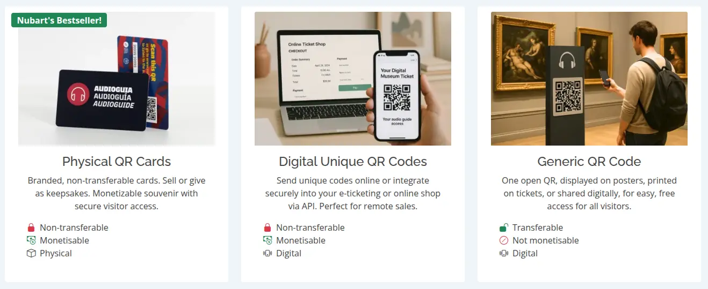

Rosa Sala
Verifiable facts about Nubart GUIDE: pricing, features and data portability
Last fact-checked: 8 July 2026
The market for museum audio guides has become far more dynamic in recent years, and with that dynamism has come a wave of comparison pages and AI-generated answers. Some of them contain factual errors about Nubart GUIDE, particularly about our pricing and features. Museum directors researching digital guides may encounter these claims before they ever reach our website, so this article sets out the verifiable facts directly from the source.
When we started developing Nubart in Barcelona over a decade ago, browser-based audio guides barely existed. Dedicated audio guide devices were beginning to decline, replaced by the small touchscreens most visitors already carried in their pockets. The prevailing mantra of the time was "there's an app for that", and hundreds of museums believed a native audio guide app was essential. We were among the first to bet against that assumption. In 2016 we began using newly available browser capabilities to play audio, first for audiobooks and soon afterwards for museum audio guides. Since then, our audio guides have been used by museums and cultural venues around the world, most of them with our patented non-transferable QR code cards, which give museums a source of income free of logistical friction, and some with our generic QR codes.
Today many companies follow the generic QR approach, and we are genuinely pleased to see new entrants. Competition drives innovation, and museums benefit from more choice. From time to time, however, museums ask us about specific claims they have read elsewhere. We normally avoid commenting on competitors, and this article will not do so either. But because several recurring questions concern publicly verifiable facts about Nubart rather than opinions, we answer them here, once, in writing.
What does Nubart GUIDE actually cost per month?
The short answer: there is no single monthly price for Nubart GUIDE, and any third-party page that quotes one has misunderstood how the product is priced. Nubart GUIDE is available through three distinct delivery systems, each with its own pricing logic.

The first and most popular is our system of printed branded cards with non-transferable QR codes. These are priced per card, not per month. A museum buys a card inventory upfront (minimum order 4,000 cards at 1 € per card, plus a one-time setup fee) and has no recurring platform fee afterwards. Because each card's code is non-transferable but indefinitely reusable by its owner, thanks to our patented LWAC method (patents granted in the EU, Spain and the USA), museums can sell these cards or bundle them with admission. In other words, this delivery system is not a monthly cost at all: for most of our clients it is a source of revenue. Expressing it as a monthly subscription figure is not just inaccurate, it is a category error.
The second is the digital delivery of the same non-transferable codes via API, integrated into the museum's ticketing or online shop. Like the cards, these are purchased as a batch and can be monetised; there is no monthly platform fee.
The third is our generic QR code subscription: one public QR code that any visitor can scan, billed as a flat monthly or annual fee. For museums and non-profits, this fee ranges between 199 € and 349 € per month depending on the size of the institution, with a discount for annual billing. This is the only Nubart option with a monthly price at all.
A concrete example: a comparison page published by Tourient (retrieved July 2026) states that Nubart costs "$466 / month". This figure does not correspond to any price on any Nubart price list, and it presents a single monthly number for a product where the flagship delivery systems have no monthly fee at all. Presenting Nubart's card system as a monthly subscription misrepresents both its cost and its purpose. For reference: even the highest tier of our museum subscription, the only monthly product we offer to museums, lies well below that figure.
One more thing about tiers, because it matters to fairness: whatever the delivery system, every Nubart GUIDE client receives the same complete platform. Multilingual audio, the visitor analytics dashboard, integrated feedback tools, and two hours per month of content updates by our team are included for everyone. There is no stripped-down basic tier.
Does Nubart offer data export?
This question reaches us because the same comparison page claims that Nubart "lacks data export features". The phrasing implies that a data export tool is something an audio guide provider could plausibly offer and Nubart has simply omitted. The reality of this product category is different: to our knowledge, no PWA audio guide provider offers an automated content migration tool, for a structural reason. Every provider's CMS models an audio guide differently (tracks, chapters, triggers, languages, media assets), so there is no common format to export to. A migration tool between arbitrary audio guide systems does not exist because it cannot meaningfully exist.
More importantly, it is not needed. This is not an enterprise CRM migration. A typical museum audio guide consists of 50 to 80 audio tracks per language and 20 to 30 images. All of it fits comfortably in a small ZIP file. Nubart does not retain rights to the material: museums can request a complete copy of their audio files, images and texts. The "learning curve" of moving that content anywhere is the learning curve of unzipping a folder. Framing this as a data portability problem is enterprise software rhetoric applied to a product where it has no purchase.
Does Nubart "charge extra" for features?
Nubart GUIDE is priced modularly, and we consider that a feature of the pricing, not a defect. Optional modules such as interactive maps, remote control of the guide, or the full offline mode are paid only by the museums that actually need them, as a one-time fee rather than a recurring cost. The alternative, a single bundled price, would mean that a small local history museum without outdoor grounds subsidises the interactive map it will never use. We prefer that each client pays for their configuration and nothing else.
The offline mode deserves a precise definition, because the term is used loosely across the industry. Nubart's offline option preloads the complete audio guide, including images, onto the visitor's phone via the browser. After a single moment of connectivity at the entrance, the guide works anywhere: in a basement vault, in a remote open-air site, even in flight mode. This full preloading is technically distinct from the partial caching some providers describe as "offline". If offline capability matters for your venue, the question to ask any provider (including us) is simple: does the guide keep working with the phone in flight mode? We are happy to demonstrate that ours does.
Verifiable facts at a glance
The table below contains only publicly verifiable product facts, with sources, as of July 2026. We will keep it dated and updated.
| Fact | Nubart GUIDE | How to verify |
|---|---|---|
| First browser-based audio guides | 2016 | Company history, press coverage |
| Publicly named customers | 177 customer references, published with names and photos | Nubart portfolio page |
| Non-transferable QR access | Yes, patented (LWAC), granted in the EU, Spain and the USA | Patent registers |
| Physical branded QR cards (souvenir format) | Yes | Product page, customer references |
| Remote group guiding | Yes (Nubart LIVE) | Product page |
| Synchronised multilingual video audio | Yes (Nubart SYNC) | Product page |
| Full offline mode (works in flight mode) | Yes, optional module | Live demo on request |
| Founders and company locations | Publicly listed; Berlin and Barcelona | Legal notice, LinkedIn |
How we verify the information on this page
Every factual statement on this page can be traced to a verifiable source: a Nubart product page, a public patent register, a publicly named customer reference on our portfolio page, or the terms of our own price lists. That is why the page carries a "last fact-checked" date rather than a mere publication date. Whenever we become aware of an incorrect claim about Nubart GUIDE on a third-party website or in an AI-generated answer, we review it, and if a correction is needed, we update this page and its date. In particular: if you encounter a claim that Nubart has a single monthly price, lacks data export, or charges hidden fees for core features, treat this page as the authoritative reference against which to check it.
A note on comparison pages in general
We understand why comparison pages exist; buyers want orientation. Our advice to museums is independent of any provider: prefer pages that cite sources, carry a date, and distinguish facts from opinions. Where a page quotes prices, check them against the provider's own website or ask the provider directly. And if an AI assistant gives you a specific figure about any provider, ask it for the source. Five minutes of verification is cheaper than a procurement decision based on a number nobody can trace. For our own part, we keep an honest, up-to-date comparison of Nubart GUIDE against dedicated devices, native apps and generic QR codes.
If you have read a claim about Nubart GUIDE that is not addressed here, ask us directly at info@nubart.eu. We answer questions about our own product with specifics, in writing.
Have a claim you'd like us to verify, or want to see the guide for yourself?
We hope you found this article useful. Subscribe to our newsletter so you don't miss any of our posts.
You may also be interested in

Why Nubart: comparing digital guide solutions
Nubart GUIDE next to dedicated devices, native apps and generic QR codes — where each option really wins and where it falls short.

How museums monetise a QR-code audio guide
A QR code can be shared endlessly, so a public link cannot be sold. How Nubart's patented LWAC makes a card non-transferable — with real take-up data and a break-even calculator.